9 Random regression and character state approaches
9.1 Lecture
Amazing beasties and crazy animals
9.2 Practical
In this practical, we will revisit our analysis on unicorn aggressivity. Honestly, we can use any other data with repeated measures for this exercise but I just ❤️ unicorns.
9.2.1 R packages needed
First we load required libraries
9.2.2 Refresher on unicorn aggression
In the previous, practical on linear mixed models, we simply explored the differences among individuals in their mean aggression (Intercept), but we assumed that the response to the change in aggression with the opponent size (i.e. plasticity) was the same for all individuals. However, this plastic responses can also vary amon individuals. This is called IxE, or individual by environment interaction. To test if individuals differ in their plasticity we can use a random regression, whcih is simply a mixed-model where we fit both a random intercept and a random slope effect.
Following analysis from the previous pratical, our model of interest using scaled covariate was:
aggression ~ opp_size + body_size_sc + assay_rep_sc + block
+ (1 | ID)We should start by loading the data and refitting the model using lmer().
unicorns <- read.csv("data/unicorns_aggression.csv")
unicorns <- unicorns %>%
mutate(
body_size_sc = scale(body_size),
assay_rep_sc = scale(assay_rep, scale = FALSE)
)
m_mer <- lmer(
aggression ~ opp_size + body_size_sc + assay_rep_sc + block
+ (1 | ID),
data = unicorns
)
summary(m_mer)Linear mixed model fit by REML. t-tests use Satterthwaite's method [
lmerModLmerTest]
Formula: aggression ~ opp_size + body_size_sc + assay_rep_sc + block +
(1 | ID)
Data: unicorns
REML criterion at convergence: 1136.5
Scaled residuals:
Min 1Q Median 3Q Max
-2.85473 -0.62831 0.02545 0.68998 2.74064
Random effects:
Groups Name Variance Std.Dev.
ID (Intercept) 0.02538 0.1593
Residual 0.58048 0.7619
Number of obs: 480, groups: ID, 80
Fixed effects:
Estimate Std. Error df t value Pr(>|t|)
(Intercept) 9.00181 0.03907 78.07315 230.395 <2e-16 ***
opp_size 1.05141 0.04281 396.99857 24.562 <2e-16 ***
body_size_sc 0.03310 0.03896 84.21144 0.850 0.398
assay_rep_sc -0.05783 0.04281 396.99857 -1.351 0.177
block -0.02166 0.06955 397.00209 -0.311 0.756
---
Signif. codes: 0 '***' 0.001 '**' 0.01 '*' 0.05 '.' 0.1 ' ' 1
Correlation of Fixed Effects:
(Intr) opp_sz bdy_s_ assy__
opp_size 0.000
body_siz_sc 0.000 0.000
assay_rp_sc 0.000 -0.100 0.000
block 0.000 0.000 0.002 0.000We can now plot the predictions for each of our observations and plot for the observed and the fitted data for each individuals. Todo so we will use the augment() function from the 📦 broom.mixed.
Below, we plot the raw data for each individual in one panel, with the fitted slopes in a second panel. Because we have 2 blocks of data, and block is fitted as a fixed effect, for ease of presentation we need to either select only 1 block for representation, take teh avaerage over the block effect or do a more complex graph with the two blocks. Here I have selected only one of the blocks for this plot
pred_m_mer <- augment(m_mer) %>%
select(ID, block, opp_size, .fitted, aggression) %>%
filter(block == -0.5) %>%
gather(
type, aggression,
`.fitted`:aggression
)
ggplot(pred_m_mer, aes(x = opp_size, y = aggression, group = ID)) +
geom_line(alpha = 0.3) +
theme_classic() +
facet_grid(. ~ type)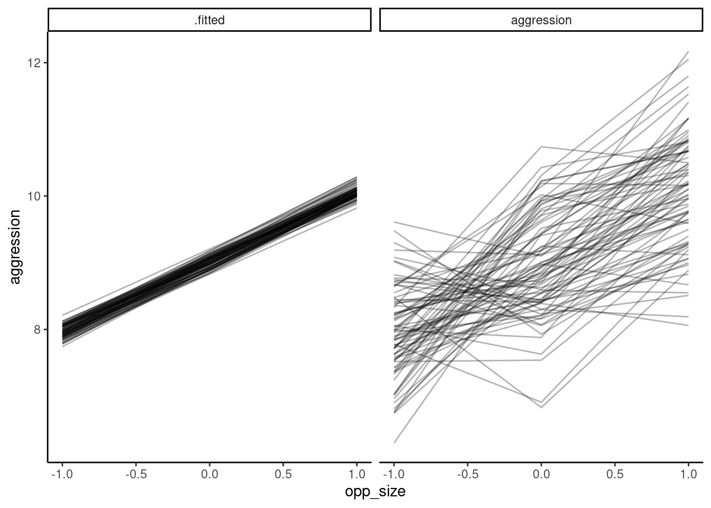
This illustrates the importance of using model predictions to see whether the model actually fits the individual-level data well or not — while the diagnostic plots looked fine, and the model captures mean plasticity, here we can see that the model really doesn’t fit the actual data very well at all.
9.2.3 Random regression
9.2.3.1 with lme4
rr_mer <- lmer(
aggression ~ opp_size + body_size_sc + assay_rep_sc + block
+ (1 + opp_size | ID),
data = unicorns
)pred_rr_mer <- augment(rr_mer) %>%
select(ID, block, opp_size, .fitted, aggression) %>%
filter(block == -0.5) %>%
gather(type,aggression, `.fitted`:aggression)
ggplot(pred_rr_mer, aes(x = opp_size, y = aggression, group = ID)) +
geom_line(alpha = 0.3) +
theme_classic() +
facet_grid(. ~ type)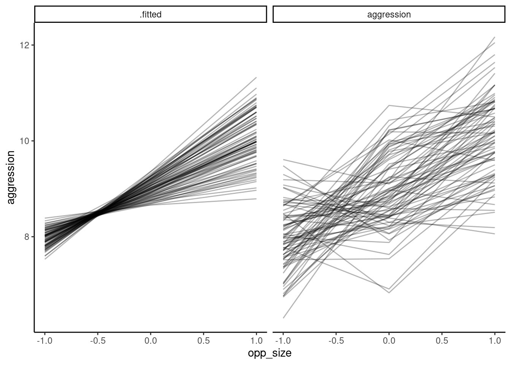
We can test the improvement of the model fit using the overloaded anova function in R to perform a likelihood ratio test (LRT):
anova(rr_mer, m_mer, refit = FALSE)| npar | AIC | BIC | logLik | deviance | Chisq | Df | Pr(>Chisq) | |
|---|---|---|---|---|---|---|---|---|
| m_mer | 7 | 1150.477 | 1179.693 | -568.2383 | 1136.477 | NA | NA | NA |
| rr_mer | 9 | 1092.356 | 1129.920 | -537.1780 | 1074.356 | 62.1206 | 2 | 0 |
We can see here that the LRT uses a chi-square test with 2 degrees of freedom, and indicates that the random slopes model shows a statistically significant improvement in model fit. The 2df are because there are two additional (co)variance terms estimated in the random regression model: a variance term for individual slopes, and the covariance (or correlation) between the slopes and intercepts. Let’s look at those values, and also the fixed effects parameters, via the model summary:
summary(rr_mer)Linear mixed model fit by REML. t-tests use Satterthwaite's method [
lmerModLmerTest]
Formula: aggression ~ opp_size + body_size_sc + assay_rep_sc + block +
(1 + opp_size | ID)
Data: unicorns
REML criterion at convergence: 1074.4
Scaled residuals:
Min 1Q Median 3Q Max
-3.04932 -0.59780 -0.02002 0.59574 2.68010
Random effects:
Groups Name Variance Std.Dev. Corr
ID (Intercept) 0.05043 0.2246
opp_size 0.19167 0.4378 0.96
Residual 0.42816 0.6543
Number of obs: 480, groups: ID, 80
Fixed effects:
Estimate Std. Error df t value Pr(>|t|)
(Intercept) 9.00181 0.03902 78.44088 230.707 <2e-16 ***
opp_size 1.05033 0.06123 79.50694 17.153 <2e-16 ***
body_size_sc 0.02725 0.03377 84.34959 0.807 0.422
assay_rep_sc -0.04702 0.03945 387.69415 -1.192 0.234
block -0.02169 0.05973 318.19553 -0.363 0.717
---
Signif. codes: 0 '***' 0.001 '**' 0.01 '*' 0.05 '.' 0.1 ' ' 1
Correlation of Fixed Effects:
(Intr) opp_sz bdy_s_ assy__
opp_size 0.495
body_siz_sc 0.000 0.000
assay_rp_sc 0.000 -0.064 -0.006
block 0.000 0.000 0.002 0.000
9.2.3.2 with asreml
unicorns <- unicorns %>%
mutate( ID = as.factor(ID))
rr_asr <- asreml(
aggression ~ opp_size + body_size_sc + assay_rep_sc + block,
random = ~str(~ ID + ID:opp_size, ~us(2):id(ID)),
residual = ~ units,
data = unicorns,
maxiter = 200
)Model fitted using the gamma parameterization.
ASReml 4.1.0 Mon Jan 22 00:18:51 2024
LogLik Sigma2 DF wall cpu
1 -109.426 0.463232 475 00:18:51 0.0
2 -105.050 0.454593 475 00:18:51 0.0
3 -101.814 0.443662 475 00:18:51 0.0
4 -100.814 0.433873 475 00:18:51 0.0
5 -100.683 0.428596 475 00:18:51 0.0
6 -100.682 0.428170 475 00:18:51 0.0plot(rr_asr)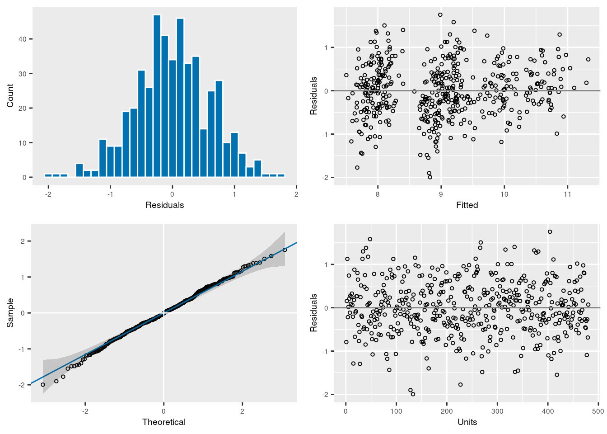
summary(rr_asr, coef = TRUE)$coef.fixed solution std error z.ratio
block -0.02168725 0.05973354 -0.3630665
assay_rep_sc -0.04702032 0.03944594 -1.1920191
body_size_sc 0.02725092 0.03377443 0.8068506
opp_size 1.05032703 0.06123110 17.1534907
(Intercept) 9.00181250 0.03901766 230.7112239wa <- wald(rr_asr, ssType = "conditional", denDF = "numeric")Model fitted using the gamma parameterization.
ASReml 4.1.0 Tue Jan 23 00:58:06 2024
LogLik Sigma2 DF wall cpu
1 -100.682 0.428168 475 00:58:06 0.0
2 -100.682 0.428168 475 00:58:06 0.0
Calculating denominator DFattr(wa$Wald, "heading") <- NULL
wa$Wald
Df denDF F.inc F.con Margin Pr
(Intercept) 1 78.3 65490 53230 0.00000
opp_size 1 79.5 293 294 A 0.00000
body_size_sc 1 84.3 1 1 A 0.42202
assay_rep_sc 1 387.6 1 1 A 0.23398
block 1 318.1 0 0 A 0.71680
$stratumVariances
df Variance ID+ID:opp_size!us(2)_1:1
ID+ID:opp_size!us(2)_1:1 78.00483 0.4790737 5.216311
ID+ID:opp_size!us(2)_2:1 0.00000 0.0000000 0.000000
ID+ID:opp_size!us(2)_2:2 78.94046 1.1937287 0.000000
units!R 318.05470 0.4281680 0.000000
ID+ID:opp_size!us(2)_2:1 ID+ID:opp_size!us(2)_2:2
ID+ID:opp_size!us(2)_1:1 -3.301137 0.5221955
ID+ID:opp_size!us(2)_2:1 0.000000 0.0000000
ID+ID:opp_size!us(2)_2:2 0.000000 3.9943993
units!R 0.000000 0.0000000
units!R
ID+ID:opp_size!us(2)_1:1 1
ID+ID:opp_size!us(2)_2:1 1
ID+ID:opp_size!us(2)_2:2 1
units!R 1summary(rr_asr)$varcomp component std.error z.ratio bound %ch
ID+ID:opp_size!us(2)_1:1 0.05042932 0.02027564 2.487187 P 0
ID+ID:opp_size!us(2)_2:1 0.09458336 0.02400745 3.939751 P 0
ID+ID:opp_size!us(2)_2:2 0.19165924 0.04832059 3.966409 P 0
units!R 0.42816954 0.03395320 12.610582 P 0rio_asr <- asreml(
aggression ~ opp_size + body_size_sc + assay_rep_sc + block,
random = ~ ID,
residual = ~units,
data = unicorns,
maxiter = 200
)Model fitted using the gamma parameterization.
ASReml 4.1.0 Tue Jan 23 00:58:07 2024
LogLik Sigma2 DF wall cpu
1 -132.611 0.560353 475 00:58:07 0.0
2 -132.106 0.567043 475 00:58:07 0.0
3 -131.796 0.575157 475 00:58:07 0.0
4 -131.743 0.580762 475 00:58:07 0.0
5 -131.742 0.580480 475 00:58:07 0.0pchisq(2 * (rr_asr$loglik - rio_asr$loglik), 2,
lower.tail = FALSE
)[1] 3.241026e-14pred_rr_asr <- as.data.frame(predict(rr_asr,
classify = "opp_size:ID",
levels = list(
"opp_size" =
c(opp_size = -1:1)
)
)$pvals)Model fitted using the gamma parameterization.
ASReml 4.1.0 Tue Jan 23 00:58:07 2024
LogLik Sigma2 DF wall cpu
1 -100.682 0.428168 475 00:58:08 0.1
2 -100.682 0.428168 475 00:58:08 0.0
3 -100.682 0.428168 475 00:58:08 0.0p_rr <- ggplot(pred_rr_asr, aes(x = opp_size,
y = predicted.value,
group = ID)) +
geom_line(alpha = 0.2) +
scale_x_continuous(breaks = c(-1, 0, 1)) +
labs(
x = "Opponent size (SDU)",
y = "Aggression"
) +
theme_classic()
p_rr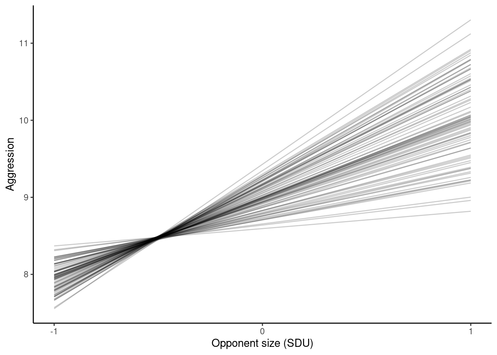
9.2.3.3 with MCMCglmm
prior_RR <- list(
R = list(V = 1, nu = 0.002),
G = list(
G1 = list(V = diag(2)*0.02, nu = 3,
alpha.mu = rep(0, 2),
alpha.V= diag(1000, 2, 2))))
rr_mcmc <- MCMCglmm(
aggression ~ opp_size + assay_rep_sc + body_size_sc + block,
random = ~ us(1 + opp_size):ID,
rcov = ~ units,
family = "gaussian",
prior = prior_RR,
nitt=750000,
burnin=50000,
thin=350,
verbose = FALSE,
data = unicorns,
pr = TRUE,
saveX = TRUE, saveZ = TRUE)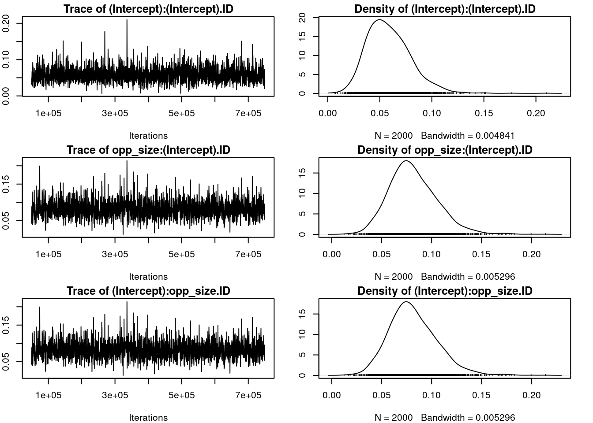
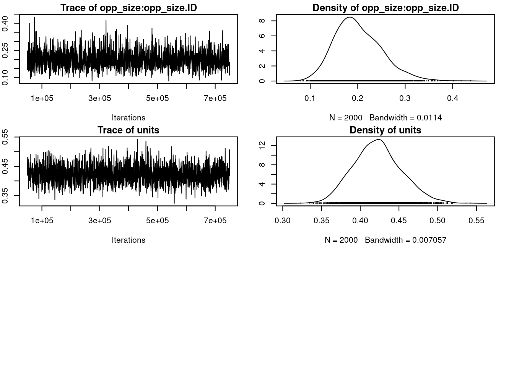
par(omar)Warning in par(omar): graphical parameter "cin" cannot be setWarning in par(omar): graphical parameter "cra" cannot be setWarning in par(omar): graphical parameter "csi" cannot be setWarning in par(omar): graphical parameter "cxy" cannot be setWarning in par(omar): graphical parameter "din" cannot be setWarning in par(omar): graphical parameter "page" cannot be setposterior.mode(rr_mcmc$VCV[, "opp_size:opp_size.ID"]) # mean var1
0.1928353 HPDinterval(rr_mcmc$VCV[, "opp_size:opp_size.ID"]) lower upper
var1 0.1145301 0.3053043
attr(,"Probability")
[1] 0.95rr_cor_mcmc <- rr_mcmc$VCV[, "opp_size:(Intercept).ID"] /
(sqrt(rr_mcmc$VCV[, "(Intercept):(Intercept).ID"]) *
sqrt(rr_mcmc$VCV[, "opp_size:opp_size.ID"]))
posterior.mode(rr_cor_mcmc) var1
0.8099658 HPDinterval(rr_cor_mcmc) lower upper
var1 0.5248906 0.9830044
attr(,"Probability")
[1] 0.95df_rand <- cbind(unicorns,
rr_fit = predict(rr_mcmc, marginal = NULL)
) %>%
select(ID, opp_size, rr_fit, aggression) %>%
group_by(ID, opp_size) %>%
summarise(
rr_fit = mean(rr_fit),
aggression = mean(aggression)
) %>%
gather(
Type, Value,
rr_fit:aggression
)`summarise()` has grouped output by 'ID'. You can override using the `.groups`
argument.# Plot separate panels for individual lines of each type
ggplot(df_rand, aes(x = opp_size, y = Value, group = ID)) +
geom_line(alpha = 0.3) +
scale_x_continuous(breaks = c(-1, 0, 1)) +
theme_classic() +
facet_grid(. ~ Type)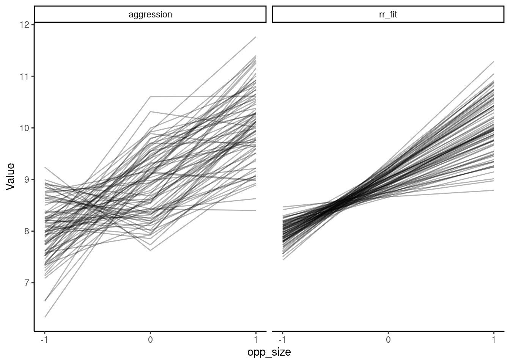
| Method | v_int | cov | v_sl | v_r |
|---|---|---|---|---|
| lmer | 0.0504347 | 0.0945863 | 0.1916653 | 0.4281625 |
| asreml | 0.0504293 | 0.0945834 | 0.1916592 | 0.4281695 |
| MCMCglmm | 0.0503277 | 0.0729472 | 0.1928353 | 0.4258950 |
9.2.4 Character-State approach
Need to pivot to a wider format
unicorns_cs <- unicorns %>%
select(ID, body_size, assay_rep, block, aggression, opp_size) %>%
mutate(
opp_size = recode(as.character(opp_size), "-1" = "s", "0" = "m", "1" = "l")
) %>%
dplyr::rename(agg = aggression) %>%
pivot_wider(names_from = opp_size, values_from = c(agg, assay_rep)) %>%
mutate(
body_size_sc = scale(body_size),
opp_order = as.factor(paste(assay_rep_s, assay_rep_m, assay_rep_l, sep = "_"))
)
str(unicorns_cs)tibble [160 × 11] (S3: tbl_df/tbl/data.frame)
$ ID : Factor w/ 80 levels "ID_1","ID_10",..: 1 1 2 2 3 3 4 4 5 5 ...
$ body_size : num [1:160] 206 207 283 288 229 ...
$ block : num [1:160] -0.5 0.5 -0.5 0.5 -0.5 0.5 -0.5 0.5 -0.5 0.5 ...
$ agg_s : num [1:160] 7.02 8.44 7.73 8.08 8.06 8.16 8.16 8.51 7.59 6.67 ...
$ agg_l : num [1:160] 10.67 10.51 10.81 10.67 9.77 ...
$ agg_m : num [1:160] 10.22 8.95 9.43 9.46 7.63 ...
$ assay_rep_s : int [1:160] 1 3 2 2 1 1 3 3 1 1 ...
$ assay_rep_l : int [1:160] 2 2 1 1 2 2 2 1 2 2 ...
$ assay_rep_m : int [1:160] 3 1 3 3 3 3 1 2 3 3 ...
$ body_size_sc: num [1:160, 1] -1.504 -1.456 0.988 1.143 -0.76 ...
..- attr(*, "scaled:center")= num 253
..- attr(*, "scaled:scale")= num 31.1
$ opp_order : Factor w/ 6 levels "1_2_3","1_3_2",..: 2 5 4 4 2 2 5 6 2 2 ...head(unicorns_cs)# A tibble: 6 × 11
ID body_size block agg_s agg_l agg_m assay_rep_s assay_rep_l assay_rep_m
<fct> <dbl> <dbl> <dbl> <dbl> <dbl> <int> <int> <int>
1 ID_1 206. -0.5 7.02 10.7 10.2 1 2 3
2 ID_1 207. 0.5 8.44 10.5 8.95 3 2 1
3 ID_10 283. -0.5 7.73 10.8 9.43 2 1 3
4 ID_10 288 0.5 8.08 10.7 9.46 2 1 3
5 ID_11 229. -0.5 8.06 9.77 7.63 1 2 3
6 ID_11 236. 0.5 8.16 10.8 8.23 1 2 3
# ℹ 2 more variables: body_size_sc <dbl[,1]>, opp_order <fct>cs_asr <- asreml(
cbind(agg_s, agg_m, agg_l) ~ trait + trait:body_size_sc +
trait:block +
trait:opp_order,
random =~ ID:us(trait),
residual =~ units:us(trait),
data = unicorns_cs,
maxiter = 200
)Model fitted using the sigma parameterization.
ASReml 4.1.0 Tue Jan 23 01:00:44 2024
LogLik Sigma2 DF wall cpu
1 -150.172 1.0 456 01:00:44 0.0
2 -129.658 1.0 456 01:00:44 0.0
3 -110.454 1.0 456 01:00:44 0.0
4 -101.879 1.0 456 01:00:44 0.0
5 -100.092 1.0 456 01:00:44 0.0
6 -100.054 1.0 456 01:00:44 0.0
7 -100.054 1.0 456 01:00:44 0.0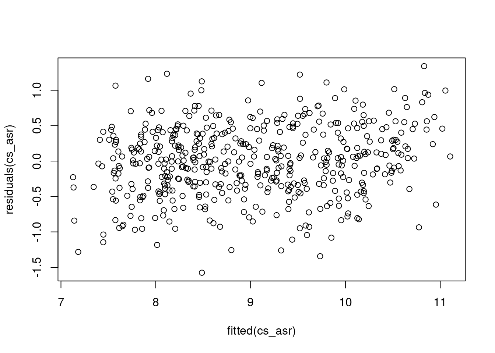
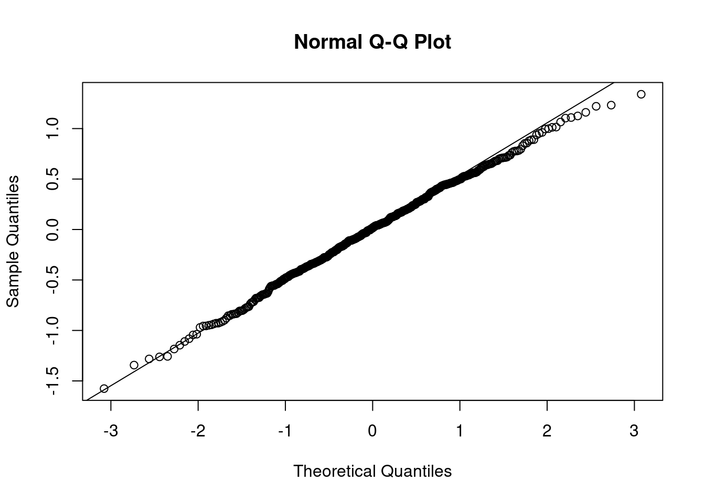
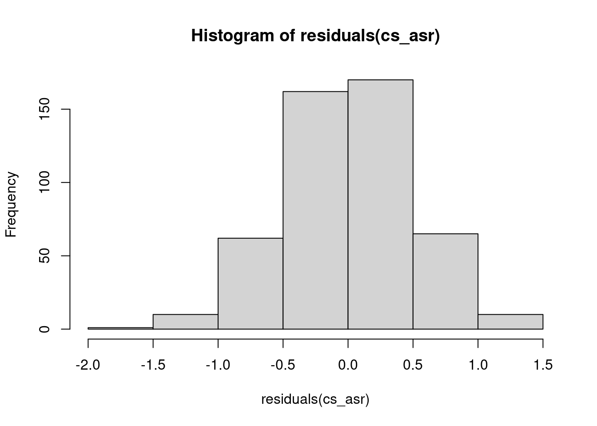
summary(cs_asr, all = T)$coef.fixedNULLwa <- wald(cs_asr, ssType = "conditional", denDF = "numeric")Model fitted using the sigma parameterization.
ASReml 4.1.0 Tue Jan 23 01:00:45 2024
LogLik Sigma2 DF wall cpu
1 -100.054 1.0 456 01:00:45 0.0
2 -100.054 1.0 456 01:00:45 0.0
Calculating denominator DFattr(wa$Wald, "heading") <- NULL
wa$Wald
Df denDF F.inc F.con Margin Pr
trait 3 73.2 21080.0 21080.0 0.00000
trait:body_size_sc 3 86.6 0.4 0.5 B 0.68324
trait:block 3 75.2 0.6 0.3 B 0.82418
trait:opp_order 15 240.5 1.3 1.3 B 0.23282
$stratumVariances
NULL component std.error
ID:trait!trait_agg_s:agg_s 0.192959991 0.06321872
ID:trait!trait_agg_m:agg_s -0.168519644 0.05085583
ID:trait!trait_agg_m:agg_m 0.245594370 0.07096325
ID:trait!trait_agg_l:agg_s -0.151990204 0.05660748
ID:trait!trait_agg_l:agg_m 0.158418588 0.06374995
ID:trait!trait_agg_l:agg_l 0.312548090 0.09125168
units:trait!R 1.000000000 NA
units:trait!trait_agg_s:agg_s 0.318089965 0.05198135
units:trait!trait_agg_m:agg_s 0.010362390 0.03695483
units:trait!trait_agg_m:agg_m 0.322379911 0.05248291
units:trait!trait_agg_l:agg_s -0.009311656 0.04168455
units:trait!trait_agg_l:agg_m 0.159240476 0.04569305
units:trait!trait_agg_l:agg_l 0.405942147 0.06679700cs_idh_asr <- asreml(
cbind(agg_s, agg_m, agg_l) ~ trait + trait:body_size_sc +
trait:block +
trait:opp_order,
random = ~ ID:idh(trait),
residual = ~ units:us(trait),
data = unicorns_cs,
maxiter = 200
)Model fitted using the sigma parameterization.
ASReml 4.1.0 Tue Jan 23 01:00:45 2024
LogLik Sigma2 DF wall cpu
1 -147.068 1.0 456 01:00:45 0.0
2 -131.268 1.0 456 01:00:45 0.0
3 -116.908 1.0 456 01:00:45 0.0
4 -110.996 1.0 456 01:00:45 0.0
5 -109.905 1.0 456 01:00:45 0.0
6 -109.866 1.0 456 01:00:45 0.0
7 -109.863 1.0 456 01:00:45 0.0pchisq(2 * (cs_asr$loglik - cs_idh_asr$loglik), 3,
lower.tail = FALSE
)[1] 0.0002038324 Estimate SE
cor_S_M -0.7741189 0.1869789 Estimate SE
cor_M_L 0.5717926 0.1469504 Estimate SE
cor_S_L -0.6189044 0.1912133vpredict(cs_asr, prop_S ~ V1 / (V1 + V8)) Estimate SE
prop_S 0.3775756 0.09950306vpredict(cs_asr, prop_M ~ V3 / (V3 + V10)) Estimate SE
prop_M 0.432404 0.0934477vpredict(cs_asr, prop_L ~ V6 / (V6 + V13)) Estimate SE
prop_L 0.4350067 0.09498512init_CS_cor1_tri <- c(
0.999,
0.999, 0.999,
1, 1, 1
)
names(init_CS_cor1_tri) <- c(
"F",
"F", "F",
"U", "U", "U"
)
cs_asr_cor1_tri <- asreml(
cbind(agg_s, agg_m, agg_l) ~ trait + trait:body_size_sc +
trait:block +
trait:opp_order,
random = ~ ID:corgh(trait, init = init_CS_cor1_tri),
residual = ~ units:us(trait),
data = unicorns_cs,
maxiter = 500
)Model fitted using the sigma parameterization.
ASReml 4.1.0 Tue Jan 23 01:00:45 2024
LogLik Sigma2 DF wall cpu
1 -228.016 1.0 456 01:00:45 0.0 (3 restrained)
2 -150.014 1.0 456 01:00:45 0.0
3 -129.580 1.0 456 01:00:45 0.0
4 -119.992 1.0 456 01:00:45 0.0 (1 restrained)
5 -116.907 1.0 456 01:00:45 0.0 (1 restrained)
6 -115.772 1.0 456 01:00:45 0.0
7 -115.647 1.0 456 01:00:45 0.0
8 -115.588 1.0 456 01:00:45 0.0
9 -115.533 1.0 456 01:00:45 0.0
10 -115.479 1.0 456 01:00:45 0.0
11 -115.427 1.0 456 01:00:45 0.0
12 -115.378 1.0 456 01:00:45 0.0
13 -115.331 1.0 456 01:00:45 0.0
14 -115.289 1.0 456 01:00:45 0.0
15 -115.251 1.0 456 01:00:45 0.0
16 -115.217 1.0 456 01:00:45 0.0
17 -115.188 1.0 456 01:00:45 0.0
18 -115.162 1.0 456 01:00:45 0.0
19 -115.141 1.0 456 01:00:45 0.0
20 -115.122 1.0 456 01:00:45 0.0
21 -115.107 1.0 456 01:00:45 0.0
22 -115.093 1.0 456 01:00:45 0.0
23 -115.082 1.0 456 01:00:45 0.0
24 -115.073 1.0 456 01:00:45 0.0 (1 restrained)
25 -115.064 1.0 456 01:00:45 0.0
26 -115.064 1.0 456 01:00:46 0.0pchisq(2 * (cs_asr$loglik - cs_asr_cor1_tri$loglik),
3,
lower.tail = FALSE
)[1] 1.367792e-06df_CS_pred <- as.data.frame(predict(cs_asr,
classify = "trait:ID"
)$pvals)Model fitted using the sigma parameterization.
ASReml 4.1.0 Tue Jan 23 01:00:46 2024
LogLik Sigma2 DF wall cpu
1 -100.054 1.0 456 01:00:46 0.1
2 -100.054 1.0 456 01:00:46 0.0
3 -100.054 1.0 456 01:00:46 0.0# Add numeric variable for easier plotting
# of opponent size
df_CS_pred <- df_CS_pred %>%
mutate(sizeNum = ifelse(trait == "agg_s", -1,
ifelse(trait == "agg_m", 0, 1)
))
p_cs <- ggplot(df_CS_pred, aes(
x = sizeNum,
y = predicted.value,
group = ID
)) +
geom_line(alpha = 0.2) +
scale_x_continuous(breaks = c(-1, 0, 1)) +
labs(
x = "Opponent size (SDU)",
y = "Aggression"
) +
theme_classic()
p_cs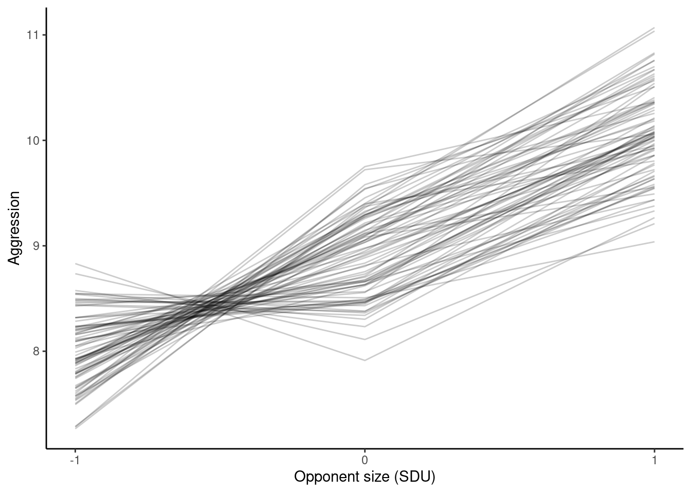
unicorns <- arrange(unicorns, opp_size, by_group = ID)
p_obs <- ggplot(unicorns[unicorns$block==-0.5,], aes(x = opp_size, y = aggression, group = ID)) +
geom_line(alpha = 0.3) +
scale_x_continuous(breaks = c(-1, 0, 1)) +
labs(
x = "Opponent size (SDU)",
y = "Aggression"
) +
ggtitle("Observed") +
ylim(5.9, 12) +
theme_classic()
p_rr <- p_rr + ggtitle("Random regression") + ylim(5.9, 12)
p_cs <- p_cs + ggtitle("Character-State") + ylim(5.9, 12)
p_obs + p_rr + p_csWarning: Removed 2 rows containing missing values (`geom_line()`).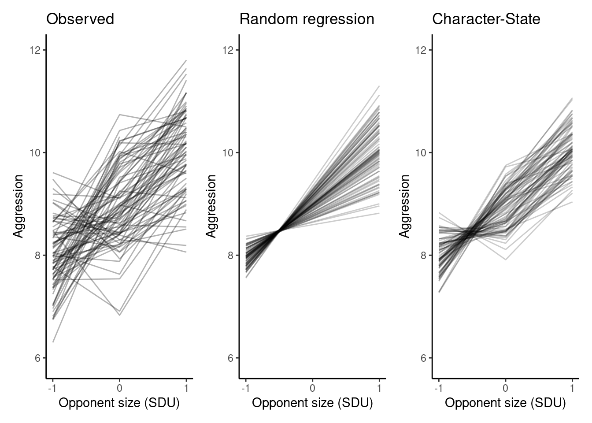
9.2.5 From random regression to character-state
var_mat_asr <- function(model, var_names, pos){
size <- length(var_names)
v_out <- matrix(NA, ncol = size, nrow = size)
rownames(v_out) <- var_names
colnames(v_out) <- var_names
v_out[upper.tri(v_out, diag = TRUE)] <- summary(model)$varcomp[pos, 1]
v_out <- forceSymmetric(v_out, uplo = "U")
as.matrix(v_out)
}
v_id_rr <- var_mat_asr(rr_asr, c("v_int", "v_sl"), 1:3)
knitr::kable(v_id_rr, digits = 3)| v_int | v_sl | |
|---|---|---|
| v_int | 0.050 | 0.095 |
| v_sl | 0.095 | 0.192 |
| v_s | v_m | v_l | |
|---|---|---|---|
| v_s | 0.193 | -0.169 | -0.152 |
| v_m | -0.169 | 0.246 | 0.158 |
| v_l | -0.152 | 0.158 | 0.313 |
We also need to make a second matrix, let’s call it Q (no particular reason, pick something else if you want). This is going to contain the values needed to turn an individual’s intercept (mean) and slope (plasticity) deviations into estimates of environment-specific individual merit in a character state model.
What do we mean by this? Well if an individual i has an intercept deviation of IDint(i) and a slope deviation of IDslp(i) for a given value of the environment opp_size we might be interested in:
IDi = (1 x IDint(i)) + (opp_size x IDslp(i))
We want to look at character states representing the three observed values of opp_size here so
Then we can generate our among-individual covariance matrix environment specific aggresiveness, which we can call ID_cs_rr by matrix multiplication:
ID_cs_rr<- Q %*% v_id_rr %*%t(Q) #where t(Q) is the transpose of Q
#and %*% is matrix multiplication
ID_cs_rr #rows and columns correspond to aggressiveness at opp_size=-1,0,1 in that order [,1] [,2] [,3]
[1,] 0.05292184 -0.04415404 -0.1412299
[2,] -0.04415404 0.05042932 0.1450127
[3,] -0.14122993 0.14501267 0.4312553cov2cor(ID_cs_rr) #Converting to a correlation scale [,1] [,2] [,3]
[1,] 1.0000000 -0.8546956 -0.9348503
[2,] -0.8546956 1.0000000 0.9833253
[3,] -0.9348503 0.9833253 1.0000000cov2cor(v_id_cs) v_s v_m v_l
v_s 1.0000000 -0.7741189 -0.6189044
v_m -0.7741189 1.0000000 0.5717926
v_l -0.6189044 0.5717926 1.00000009.2.6 Conclusions
9.2.7 Happy multivariate models